El santuario es accesible desde que llegas a la región de la torre de Lanayru, sin embargo, debes encontrarlo, ya que se encuentra escondido en una pequeña cueva. Para encontrarla debes ir a la isla Tinleg, al este del lago de Akkala.
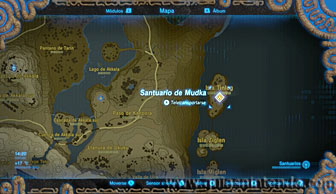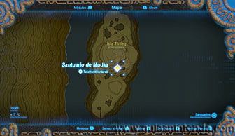
A diferencia de otros santuarios escondidos en cuevas, aquí no te servirán las bombas, sino que tendrás que usar un globo de octorok sobre una gran piedra plana que hay en el suelo (aunque podrías usar también el módulo paralizador en dicha piedra). Los globos de octorok los puedes conseguir fácilmente derrotando a cualquier octorok (en esta zona encuentras varios en tu camino). Selecciona uno en el inventario y deposítalo sobre la piedra.
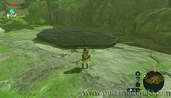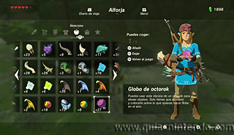
El globo elevará sin esfuerzo la piedra y dejará un hueco en el suelo por donde podrás colarte para llegar al santuario.
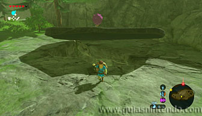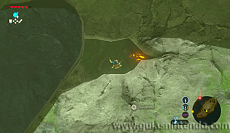
Al llegar al santuario verás una balanza gigante enfrente de ti. Tienes que ponerte en el plato de más abajo y quitar el barril. Después mira hacia arriba y verás una gran plataforma de madera sujeta por cuerdas. Rompe las cuerdas con flechas y caerá un gran bloque de metal. Al caer, lo hará sobre el otro plato de la balanza por lo que te hará saltar por los aires.
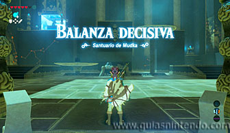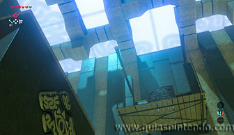
Si no te sale a la primera, siempre puedes elevar tú el bloque con el módulo imán y soltarlo desde arriba, así volverás a saltar con fuerza hacia arriba. De este modo podrás planear para alcanzar el cofre del santuario (contiene un Diamante).
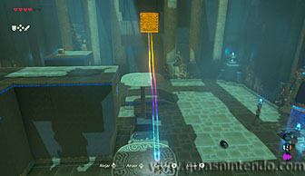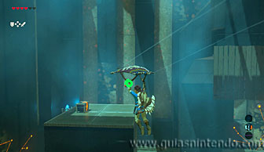
Repite el proceso de la balanza para llegar a la plataforma donde está el altar. Cuando llegues a él podrás examinarlo para obtener un símbolo de valía.
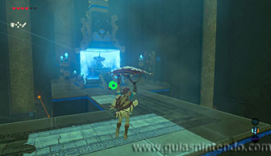